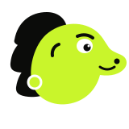
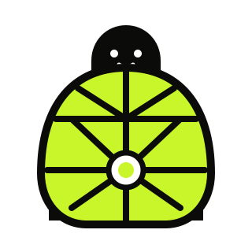
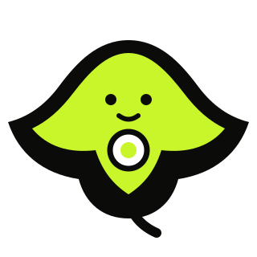
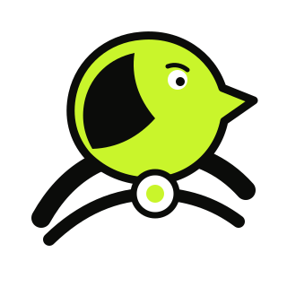
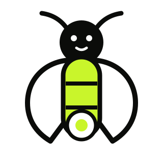

GoalGuard · Mascot exploration round two
Five different reasons for a mascot to exist.
This round moves away from the lime side-profile animal formula. Every character keeps the user’s purpose visible, but each uses a genuinely different silhouette and emotional role.
Design correction
Pip’s species is original, but the lime head, round eye, smile, and side profile are too close to CoinGecko’s category cues. The alternatives below test protection, care, clarity, and calm movement without resembling a crypto lizard.




2D master mascot
Crisp at 24px, reliable in light/dark/lime, easy to animate accessibly, and aligned with GoalGuard’s flat code-native visual language.
3D for campaigns only
Useful later for a pitch-deck cover, launch still, or booth visual. Keep it out of navigation, financial states, and the core workflow.